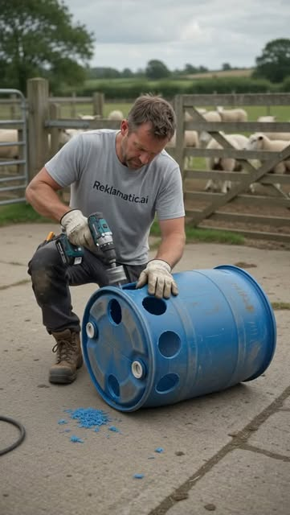
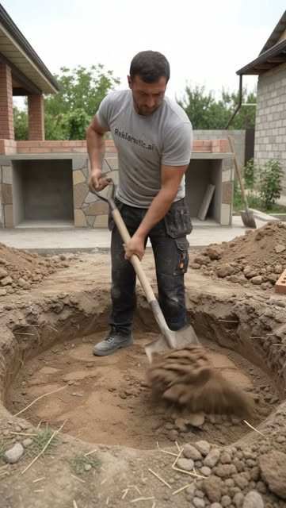
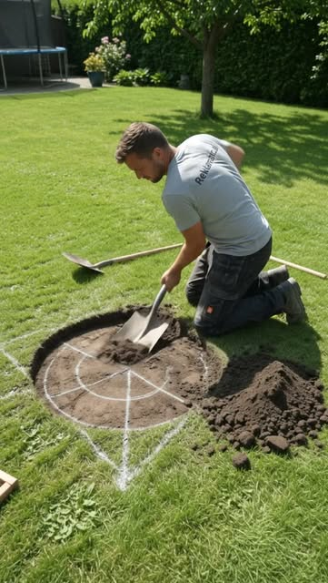
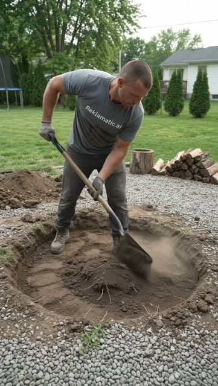
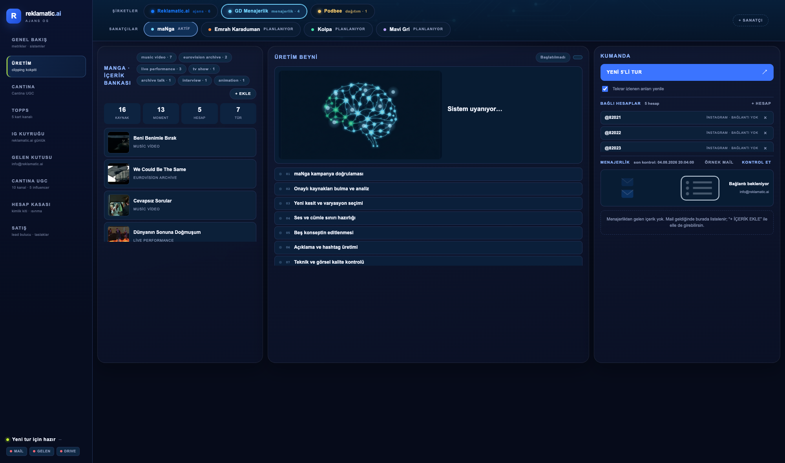

Kısa video dağıtımı ve clipping kampanyası operasyonu
Bu doküman, Digital Exchange'in elindeki ve üreteceği UGC videoların sosyal medya
algoritmalarında izlenmeye dönüştürülmesi için Reklamatic.ai'nin sunduğu iki çalışma modelini, fiyatlarını,
süreçlerini ve mevcut işlerimizden doğrulanabilir örnekleri içerir. Görüşmemizdeki konuların tamamı
yazılı olarak buradadır.
Hazırlayan: Cem Gülçağ, Kurucu — Reklamatic.ai · +90 530 231 29 47 · info@reklamatic.ai
01 · Reklamatic.ai hakkında
Kim olduğumuz ve ne yaptığımız
Reklamatic.ai, kısa video (Reels / TikTok / Shorts) üretimini ve dağıtımını uçtan uca otomatikleştirmiş
bir clipping ajansıdır. İşimizin özü şudur: bir kaynak içeriği alırız, ondan izlenme potansiyeli yüksek
kesitler ve varyantlar üretiriz, bunları yönettiğimiz hesap ağında planlı şekilde yayınlarız ve her yayının
sonucunu canlı bağlantısıyla raporlarız.
Bu hattı önce kendi kampanyalarımız için kurduk ve bugün üç uluslararası kampanyada aktif olarak
çalıştırıyoruz:
Lovable (yazılım, ABD/global): kampanya kuralları gereği içerik başına ödeme 1.000 izlenme
başına 1 $, video başına üst limit 1.000 $; içeriklerimiz YouTube, Instagram ve TikTok'ta yayınlanıyor.
Cantina (AI sosyal platform, ABD): AI karakterli UGC videoları — 15 Instagram hesabından her
gece otomatik üretim ve yayın.
Topps (koleksiyon kartı, ABD): ABD kitlesine yönelik 5 YouTube Shorts kanalı; ABD saatine ve
diline göre yayın.
Kendi ağımızda 70'ten fazla hesap yönetiyoruz ve bugüne kadar toplamda 200 milyonun üzerinde
görüntülenme ürettik. Aşağıdaki hesap, tek örnek olarak yeterlidir: sıfırdan açıldı, tek kuruş reklam
harcanmadı, tüm içerikleri otomasyon hattımız üretti.
instagram.com/bestdiyvide0s284 gönderi · 71,3 B takipçi · hesap açıktır, kontrol edilebilir
SABİT▶ 3,1 Mn

SABİT▶ 84,4 Mn
SABİT▶ 12,7 Mn



Sabitlenmiş üç videonun toplam izlenmesi 100 milyonun üzerindedir;
tek videoda 84,4 milyon izlenmeye ulaşılmıştır. Tamamı organik dağıtımdır.
200 Mn+
toplam görüntülenme
70+
aktif yönetilen hesap
3
aktif uluslararası kampanya
7/24
otomatik üretim ve yayın
02 · Modelin tanımı
Clipping kampanyası nedir, para nasıl akar?
Bu modeli hiç duymamış biri için baştan anlatalım. Dünyada markalar, içeriklerini yaymak için son iki
yılda şu sistemi kullanıyor (en bilinen örneği Whop platformundaki "content rewards" kampanyalarıdır):
Marka bir kampanya açar. Kampanyada şunlar yazar: tanıtılacak ürün/içerik, kaynak videolar,
uyulacak kurallar (açıklamaya yazılacak metin, kullanılacak etiket, konulacak bağlantı), toplam bütçe ve
1.000 izlenme başına ödenecek tutar. Örnek: "Bütçe 20.000 $, 1.000 izlenme = 1 $, video başına en
fazla 1.000 $ ödenir."
İçerik üreticiler ("clipper"lar) kampanyaya katılır. Kaynak videolardan kendi kliplerini
hazırlar ve kendi sosyal medya hesaplarında yayınlarlar.
İzlenmeler doğrulanır, ödeme izlenmeye göre yapılır. Her üretici, videolarının ürettiği
doğrulanmış izlenme kadar kampanya bütçesinden pay alır. 500.000 izlenme üreten 500 $ alır; 3.000 izlenmede
kalan 3 $ alır. Tutmayan içerik markaya maliyet yazmaz.
Sistemin markaya sağladığı şey nettir: reklam panelinde tahmini gösterim satın alırsınız; burada
gerçekleşmiş izlenme satın alırsınız. Üreticinin kazancı izlenmeye bağlı olduğu için sistemdeki herkes
tutan içeriği bulmaya mecburdur — motivasyon markayla aynı yöndedir.
Reklamatic.ai bu sistemin neresinde? Biz bu kampanyalarda içerik üreten ve izlenme kazanan
taraftayız — yukarıda saydığımız Lovable, Cantina ve Topps kampanyalarında halen her gece içerik üretip
yayınlıyoruz. Yani modeli dışarıdan anlatan değil, içinde para kazanan bir ekibiz. Size teklifimiz, bu
işleyişi aracı platform olmadan, doğrudan sizin kampanyalarınız için işletmemizdir.
02b · Yazılımımız ne yapıyor
Üç farklı girdi, tek hat
Elinizde hangi tip malzeme varsa hattımızın girdisi o olur. Üç yol da aynı panelden ilerler ve aynı
hesap ağında yayınlanır:
Uzun videolarınız varsa → otomatik kesit üretimi. Yayın kaydı, röportaj, vlog, podcast veya
kampanya çekimi gibi uzun videoları panele verirsiniz. Yazılım videoyu baştan sona çözümler: konuşma
kelime kelime zaman koduyla yazıya dökülür, izlenme potansiyeli yüksek bölümler (ilgi çekici cümle,
tepki anı, çarpıcı bilgi) işaretlenir ve her biri dikey kısa videoya dönüştürülür — altyazı ritme
oturtulur, açılış cümlesi (hook) eklenir, başlık videonun içine işlenir. Bir saatlik tek kaynaktan
onlarca farklı klip çıkar.
Kampanya kaynakları varsa → kampanya içeriği üretimi. Whop tipi kampanyalarda markanın
paylaştığı kaynak videolar ve brief kurallarını sisteme tanımlarız; hat, kurallara uygun (etiket,
açıklama, bağlantı) klipleri üretir ve yayınlar. Lovable, Cantina ve Topps'ta bu şekilde çalışıyoruz.
Hazır UGC videolarınız varsa → çoklu kanal dağıtımı. Kendi çektiğiniz ya da üreticilerinizden
gelen videolar panele girer; sistem her hesap için ayrı başlık, ayrı açıklama ve ayrı etiket seti üretip
videoyu ağdaki onlarca hesapta yayınlar. Aynı video 30 hesapta 30 farklı anlatımla çıkar; hangi
anlatımın tuttuğunu tahmin etmezsiniz, yayın verisi söyler.
Üç yolda da sonrası aynıdır: hesap eşleştirme, yayın takvimi, gece yayın turları, canlı bağlantı kaydı
ve rapor.
Çalıştığımız platformlar: TikTok, Instagram (Reels), YouTube (Shorts) ve talep hâlinde Facebook.
UGC dağıtımında ana mecra TikTok ve Instagram'dır; kampanyanın hedef kitlesine göre ağırlık birlikte
belirlenir. İçerikler dikey (9:16) formatta üretilir ve her platformun kendi kurallarına (süre, altyazı,
etiket) göre uyarlanır.
03 · Çalışma Modeli 1
Görüntülenme bazlı kampanya — 1.000 izlenme = 1 $
Kimin için: Elinde hazır UGC videoları olan ve bunları hızla izlenmeye dönüştürmek isteyen
markalar/ajanslar. İçerik sizden, dağıtım operasyonunun tamamı bizden.
İşleyiş, adım adım:
Brief ve bütçe: Kampanya hedefini, kaynak videoları, açıklama/etiket/bağlantı kurallarınızı ve
toplam bütçeyi yazılı iletirsiniz. Minimum kampanya bütçesi 1.000 $'dır (≈ 1 milyon doğrulanmış
izlenme). Video başına üst ödeme limiti koyabilirsiniz.
Üretim ve çoğaltma: Gönderdiğiniz her video olduğu gibi de yayınlanabilir; talep ederseniz
otomasyon hattımız her videodan farklı açılış cümlesi, başlık ve altyazıyla birden fazla varyant üretir.
Böylece hangi anlatımın tuttuğu tahminle değil yayın verisiyle bulunur — bu, reklamdaki "kreatif testi"nin
bütçesiz halidir.
Yayın: İçerikler iki tip hesapta yayınlanır ve karışım kampanya hedefine göre kurulur:
(a) kitlesi hazır niş hesaplar — örneğin bir müzik kampanyasında halihazırda o türün içeriğini
paylaşan bir sayfa, videoyu ilk dakikadan doğru kitleye izletir; izlenme hızlı ve öngörülebilir gelir;
(b) kampanyaya özel açılan yeni hesaplar — kitlesi olmadığı için algoritması karışık ilerler ama
keşfet üzerinden geniş ve taze kitleye ulaşır; yukarıdaki 84,4 milyonluk video bu tip bir hesaptan
çıkmıştır. Hedef coğrafya neresiyse (ABD, Avrupa, Körfez) hesap kurulumu oraya göre yapılır.
Doğrulama ve rapor: İzlenmeler platformun kendi sayacından okunur. Haftalık raporda her yayın
için canlı bağlantı, hesap, platform, tarih, izlenme ve erişilebilen coğrafya kırılımı bulunur. Bütçe
bittiğinde yayın durur; dilerseniz artırır, dilerseniz kapatırsınız.
İzlenme nasıl doğrulanır, faturaya nasıl yansır?
Bu modelde en kritik soru şudur: izlenmeyi kim sayıyor? Cevabımız, sayımı
denetlenebilir hâle getirmektir:
Kaynak: Sayı, videonun yayınlandığı platformun kendi sayacıdır (Instagram, TikTok, YouTube
Shorts). Bizim ürettiğimiz bir rakam değildir.
Denetim erişimi: Kampanya boyunca operasyon panelimize salt-okunur erişim veririz.
Hangi video, hangi hesapta, ne zaman yayınlandı ve o an kaç izlenmede — canlı görürsünüz. Ayrıca
istediğiniz videonun platform istatistik ekranını ekran paylaşımıyla birlikte inceleriz.
Sayım penceresi: Bir videonun izlenmesi, yayından 30 gün sonra dondurulur ve fatura o
rakam üzerinden kesilir. 30 günden sonra gelen izlenmeler ücretsizdir.
İtiraz hakkı: Raporda şüpheli bulduğunuz herhangi bir yayını işaretlersiniz; birlikte
inceleriz ve haklı çıkarsanız o kalem faturadan düşülür.
Trafik kuralı: Bot, izlenme satın alma ve etkileşim havuzu kullanılmaz. Bunun tespiti için
raporda izlenme kaynağı (keşfet/profil/takipçi) ve coğrafya kırılımı paylaşılır — sahte trafik bu iki
kırılımda hemen belli olur.
Ödeme akışı: Bütçe baştan bloke edilmez. Her hafta gerçekleşen izlenme raporlanır, o dönemin
faturası kesilir ve ödenir. Kampanyayı istediğiniz hafta durdurabilirsiniz; kalan bütçe için
yükümlülüğünüz olmaz.
Özet koşullar: 1.000 doğrulanmış izlenme = 1 $ (hedef ülke fark etmeksizin) ·
minimum kampanya bütçesi 1.000 $ · mevcut ağda ilk yayınlar 48 saat içinde (kampanyaya özel yeni hesap
isteniyorsa 12-15 gün kurulum) · sayım penceresi 30 gün · haftalık canlı bağlantılı rapor + panele
salt-okunur erişim · istediğiniz an durdurma/artırma hakkı.
Pilot paketi: Karar vermeden önce sistemi kendi içeriğinizle görmek için
önerimiz: 1.000 $ · 1 milyon doğrulanmış izlenme hedefi · yaklaşık 2 hafta · tek başlık, 3 farklı açılış
varyantı · haftalık canlı bağlantılı rapor. Pilot sonunda elinizde gerçek rakamlar olur; devam kararını
ona göre verirsiniz.
İş sonucuna bağlanması: İzlenme tek başına ölçü değildir. Talep ederseniz her yayına markanızın
UTM'li bağlantısı veya profil bio bağlantısı eklenir; böylece kampanyanın site trafiğine ve dönüşüme
katkısını kendi analitik panelinizden ölçebilirsiniz.
04 · Çalışma Modeli 2
Markaya özel sabit hesap ağı — aylık sabit fiyat
Kimin için: Düzenli içerik akışı isteyen, izlenme başına değil öngörülebilir aylık bütçeyle
çalışmak isteyen ve hesapların kendisine ait olmasını isteyen markalar. Kampanya modeli "anlık hacim"
üretir; bu model markaya kalıcı bir dağıtım varlığı kurar.
Kapsam: Taban 30 hesap açılır (talep hâlinde 100 hesap ve üzerine çıkılabilir). Her hesaptan günde
5 içerik yayınlanır — 30 hesapta ayda 4.500 yayın. Hesap isimleri ve görsel kimlik birlikte belirlenir; her
açıklamada markaya yönlendirme ve etiket, her profilde markanın bağlantısı bulunur; içerikler yayına girmeden
onaydan geçer; aylık rapor verilir.
Üç hizmet tipi vardır; fark, hesaplarda yayınlanacak içeriğin nasıl elde edildiğidir.
Fiyat hesap başına aylıktır ve içeriğin üretim yüküne göre değişir:
1) UGC Repost Ağı — 120 $/hesap/ay: Elinizde hazır UGC videolar varsa (kendi çektikleriniz
veya üreticilerinizden gelenler), bu videolar panele yüklenir ve her hesapta farklı başlık, farklı
açıklama ve farklı etiket kurgusuyla yayına sokulur. Aynı video 30 ayrı hesapta 30 ayrı anlatımla
çıkar; hangi başlığın tuttuğunu yayın verisi gösterir. Yeni içerik üretilmez, mevcut içerik maksimum
kanala yayılır — en ekonomik paket budur.
2) Clipping Paketi — 150 $/hesap/ay: Elinizde uzun videolar varsa (yayın, röportaj, vlog,
kampanya çekimi), yazılımımız bu videolardan izlenme potansiyeli yüksek kesitleri çıkarır; her kesite
zaman kodlu altyazı, açılış cümlesi (hook) ve video içi başlık işlenir. Bir saatlik tek kaynak, onlarca
farklı klibe dönüşür ve ağa dağıtılır.
3) Özgün Üretim / AI Influencer Paketi — 180 $/hesap/ay: İçerik sıfırdan bizim tarafımızdan
üretilir: markaya özel tasarlanan AI karakterlerle UGC videoları (05. bölümdeki Cantina örnekleri gibi)
veya markanın konseptine göre üretilen özgün kısa videolar. Kaynak içerik gerektirmez; en yüksek üretim
yükü bu pakettedir.
Paketler karıştırılabilir: örneğin 20 hesap repost + 10 hesap AI influencer kurulabilir; her hesap kendi
paketinin fiyatından hesaplanır. Bir video birden fazla platformdaki eş hesaplarda da yayınlanabilir
(15 Instagram + 15 TikTok gibi) — bu dağılım fiyatı değiştirmez.
Hesap başı aylık fiyat — hacim kademeleri
Hizmet tipi
30 hesap
40 hesap
50 hesap
75 hesap
100 hesap
UGC Repost
120 $
115 $
110 $
105 $
100 $
Clipping
150 $
145 $
140 $
135 $
130 $
Özgün Üretim / AI
180 $
175 $
170 $
165 $
160 $
Taahhüt indirimi (hesap başı fiyattan düşülür, taahhüt süresince sabit kalır)
Süre
Aylık çalışma
3 ay taahhüt
6 ay taahhüt
12 ay taahhüt
İndirim
—
−5 $/hesap
−10 $/hesap
−20 $/hesap
Örnek: 30 hesap Özgün
5.400 $/ay
5.250 $/ay
5.100 $/ay
4.800 $/ay
Örnek: 30 hesap Repost
3.600 $/ay
3.450 $/ay
3.300 $/ay
3.000 $/ay
Fiyatlara KDV eklenir. Hacim ve taahhüt indirimleri birleşir:
örneğin 50 hesap + 12 ay taahhüt, Repost pakette hesap başı 110 − 20 = 90 $ demektir. 30 hesabın
altındaki butik işlerde hizmet tipine göre hesap başı 150 / 185 / 220 $ uygulanır. 100 hesabın üzeri
projeler için özel fiyat çalışılır.
Digital Exchange'e özel: bayi (beyaz etiket) koşulları
Bu hizmetleri kendi müşterilerinize satmak istediğinizde araya girmeyiz:
Bayi iskontosu: Yukarıdaki liste fiyatları üzerinden %15 partner iskontosu uygulanır;
müşteriye satış fiyatını siz belirlersiniz, aradaki fark sizin marjınızdır.
Beyaz etiket raporlama: Tüm raporlar Digital Exchange logosu ve kimliğiyle hazırlanır;
müşteriyle iletişim tamamen sizde kalır, operasyon bizde.
Müşteri koruması: Sizin getirdiğiniz müşteriye doğrudan teklif vermeyiz; sözleşme süresince
ve sonrasında 12 ay boyunca bu kural geçerlidir.
Kategori münhasırlığı (opsiyonel): Talep hâlinde, müşterinizin doğrudan rakibi olan bir
markayla aynı dönemde çalışmama taahhüdü verilir; koşulları ayrıca belirlenir.
Riskler ve garantilerimiz
Hesap kapanması bizim riskimizdir. Bu hacimde çalışırken platform kaynaklı hesap kapanmaları
olabilir. Kapanan her hesap 7 gün içinde ücretsiz olarak yenilenir; yeni hesap yayına girene kadar
o hesabın ücreti işlemez. Kapanan hesap sayısı aylık raporda açıkça belirtilir.
İçerik hakları: Bize verdiğiniz kaynak içeriklerin kullanım haklarının sizde olduğunu kabul
ederiz. Üçüncü taraf bir hak sahibinden itiraz gelirse ilgili içerik tüm hesaplardan 24 saat içinde
kaldırılır. Müzik kullanımında platformların ticari kütüphaneleri veya sizin sağladığınız lisanslı
müzik kullanılır.
Hesap devri: Sabit ağ modelinde hesaplar markaya aittir. Çalışma sona erdiğinde tüm hesapların
erişim bilgileri (mail, şifre, iki adımlı doğrulama) 7 gün içinde size devredilir; takipçileriyle
birlikte sizde kalır.
Erken çıkış: Taahhütlü çalışmada erken çıkış hâlinde ceza uygulanmaz; yalnızca kullandığınız
aylar için aylık liste fiyatı ile taahhüt fiyatı arasındaki fark faturalandırılır.
Reklam mevzuatı: İçeriklerde reklam ilişkisinin belirtilmesi gereken durumlarda (marka
sponsorluğu, ürün tanıtımı) ilgili ülkenin kurallarına uygun etiketleme yapılır. Bu konudaki
talimatlarınız birebir uygulanır.
Süreç ve ödeme: Onayla birlikte toplam tutarın %10'u ön ödeme alınır ve hesap açılışları aynı gün
başlar. Açılış ve hazırlık 7-10 gün sürer; ardından hesapların platform güvenine oturması için 5 günlük
ısınma dönemi uygulanır (spam filtrelerine yakalanmamak için hesaplar bu sürede organik davranışlarla
aktifleşir). Fatura dönemi, içeriklerin yayınlanmaya başladığı günden itibaren işler — hazırlık süresi
faturalandırılmaz. Kalan ödeme yayın dönemi başında tahsil edilir.
Beyaz etiket: Digital Exchange'in kendi müşterileri için bu ağlar sizin markanızla raporlanabilir;
operasyon bizde kalır, müşteri ilişkisi sizde.
05 · Üretim örnekleri
Hattımızdan çıkan işler — videolar sunumun içinde oynar
Aşağıdaki sekiz video üretim hattımızdan alınmıştır: AI karakterli UGC (Cantina kampanyası), influencer
içeriklerinden clipping (Ebru Önel, IG 49,6B — kendi reels'lerinden hook + altyazı + CTA varyantları),
sanatçı ve yayıncı klipleri (maNga, Barış Özcan) ve tamamen otomatik üretilen DIY içeriği.
AI UGC · Cantina
AI UGC · Cantina
Influencer · Ebru Önel
Influencer · Ebru Önel
Sanatçı · maNga
Sanatçı · maNga
Yayıncı · Barış Özcan
Tam otomatik · DIY
Canlı yayın örnekleri: Cantina ağından
Instagram reel 1 ·
reel 2 ·
reel 3 —
Topps (ABD) kampanyasından YouTube Shorts
örneği. Talep hâlinde markanıza özel AI karakterler (Cantina'daki gibi) sıfırdan tasarlanır.
06 · Coğrafya
Hesaplar hedef pazarınızın içinde açılır
Yurt dışı kampanyalarında sonucu belirleyen şey hesabın kurulumudur: bölge ayarı, yayın saatleri, dil,
açıklama ve etiket kurgusu hedef ülkeye göre yapılmazsa algoritma içeriği yanlış kitleye dener. Biz her
hesabı istenen ülkenin içinde gösterilecek altyapıyla açarız — ABD, İngiltere, Almanya, Fransa, Körfez veya
hedeflediğiniz başka bir pazar. Topps kampanyamız bunun çalışan örneğidir: kanallar ABD saatine, İngilizce
içeriğe ve ABD kitlesine göre yayın yapar ve izlenmesini ABD'den alır. Digital Exchange'in yurt dışı UGC
kampanyaları için bu kurulum hazırdır.
07 · Operasyon altyapısı
6 ayda geliştirilen özel otomasyon hattı
Operasyonun tamamı kendi geliştirdiğimiz panelden yönetilir. Aşağıdaki görüntü canlı sistemden
alınmıştır. Görüşmede panelin çalışır hâli ekran paylaşımıyla gösterilecektir.

İçerik bankası ve üretim
Çalıştığınız influencer ve markaların içerikleri panele mail veya Drive
bağlantısıyla otomatik düşer; her müşterinin kendi içerik bankası olur (kaynaklar, öne çıkan anlar,
hesap eşleşmeleri). Üretim beyni bu bankadan yedi adımda insansız üretim yapar: kampanya doğrulama,
kaynak analizi, kesit ve varyasyon seçimi, ses-cümle sınırı, kurgu, açıklama ve etiket üretimi, teknik
kalite kontrolü. Kurguda konuşma kelime kelime zaman koduyla çözülür, altyazı ritme oturtulur, başlık
videonun içine işlenir; Türkçe ve İngilizce çalışır.
Onay ve revizyon sistemi
İçerikler yayına girmeden onayınızdan geçer. Verdiğiniz her revizyon notu
("altyazı stili şöyle olsun", "bu ifade kullanılmasın") ilgili konseptin kaydına işlenir ve o konseptin
sonraki tüm üretimleri en son revize kurala göre çıkar — aynı notu iki kez vermezsiniz. Yayın her
zaman onaylı son sürümden yapılır; reddedilen içerik arşive düşer. Bugün bu hattan ayda binlerce yayın
geçiyor; hesap sayısı arttığında üretim hızı değil yalnızca yayın planı büyür.
İki model birlikte de çalışır: kampanya modeliyle hızlı sonuç alınırken, sabit ağ markaya kalıcı dağıtım
gücü kurar. Başlamak için tek gereken: seçtiğiniz model, brief ve bütçe onayı. Sorularınız için telefon ve
e-posta her zaman açık.